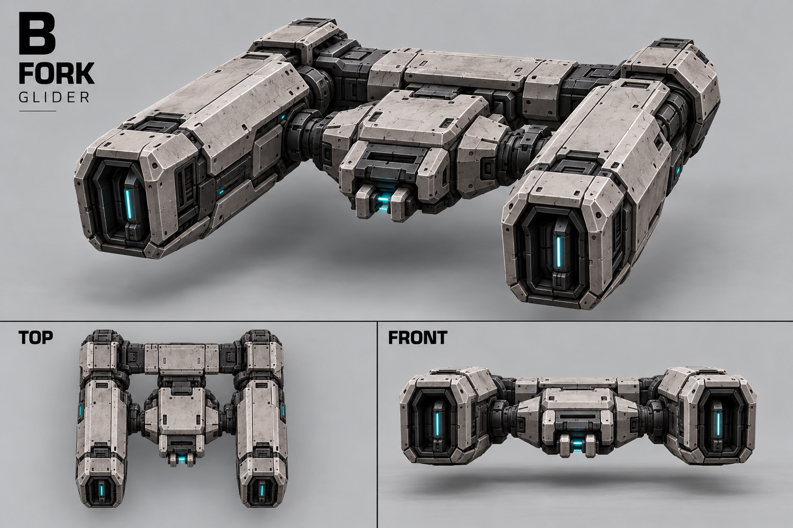
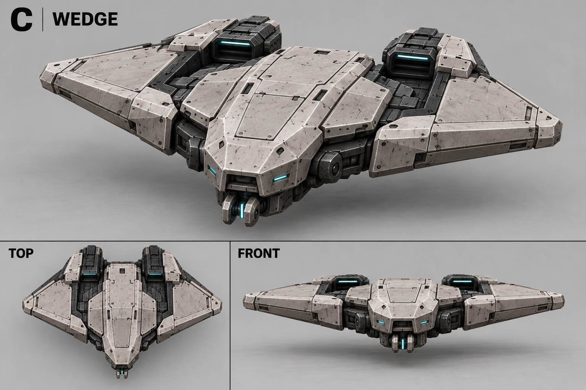
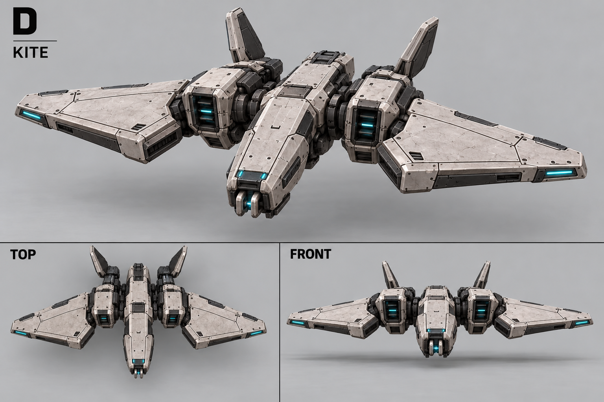
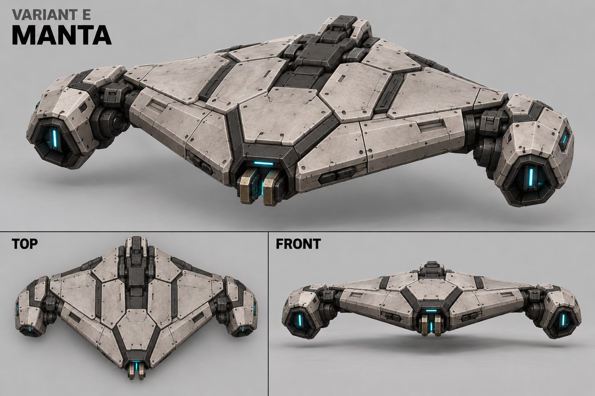
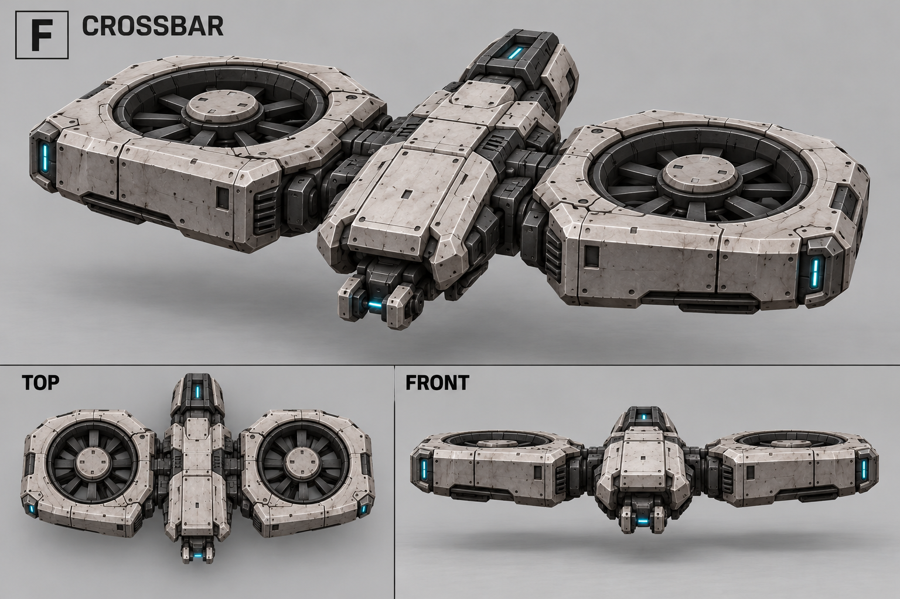
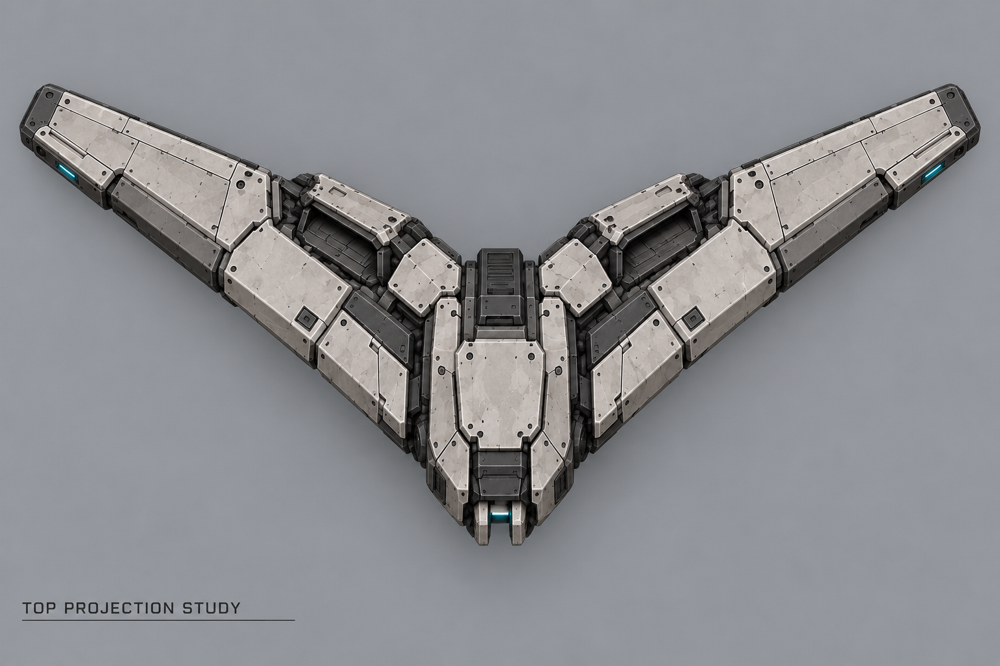

A — Бумеранг
Верхний большой ракурс — эталон. Малый TOP ошибочен: форма крыла не согласована.

Лёгкий воздушный рейдер с цепным разрядом. Земля и воздух, перескок только в том же слое. Вариант ещё не выбран; малые виды — предварительные референсы.
Верхний большой ракурс — эталон. Малый TOP ошибочен: форма крыла не согласована.





Новая попытка, не утверждённая точная проекция. Предыдущая правка отклонена.
